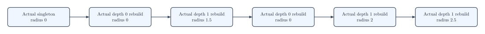
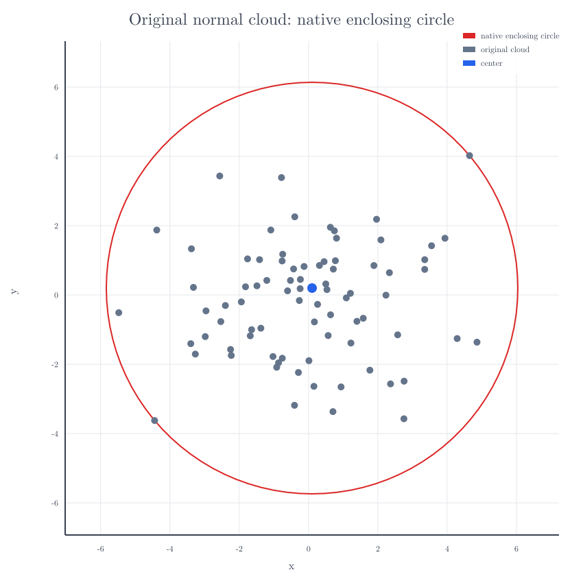
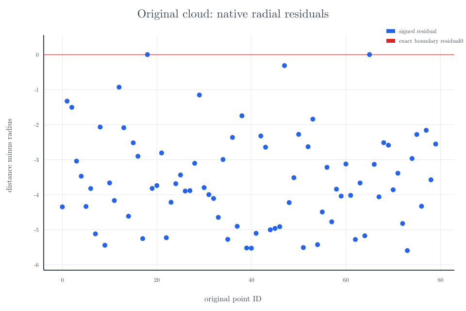
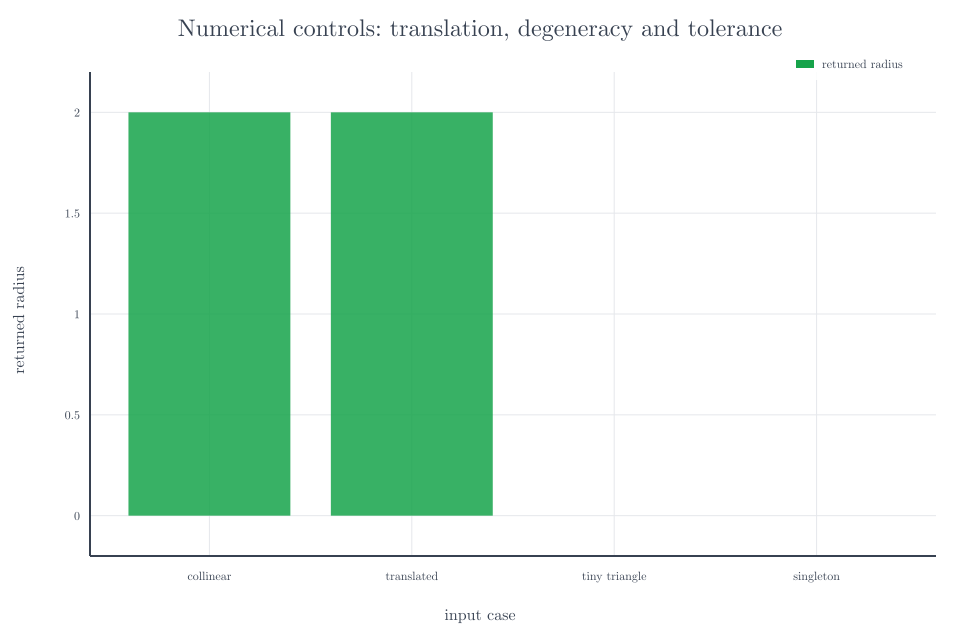

Minimum enclosing circles
Abstract
Find a small circle enclosing a finite planar point set. Its exact geometric optimum is determined by at most three boundary points, which permits incremental boundary rebuilding. We show actual containment decisions on a triangle, retain the original eighty-point normal cloud, and distinguish tolerance-aware numerical enclosure from an exact support or minimality certificate.
Why at most three points suffice
An exact smallest enclosing circle is unique: if two distinct centers gave the same minimal radius, their midpoint would cover all points with a smaller radius by the squared-distance identity. Its essential boundary set has either two diametrically opposite points or three points defining a circumcircle; one point suffices for a singleton. More boundary points may lie on the same circle without being essential.
Two boundary points a,b give center(a+b)/2 and radius half their distance. For three noncollinear points, subtracting the equations for their squared distances gives a two-by-two linear system for the circumcenter. Translated long-double arithmetic avoids unnecessary large global-coordinate squares; exact orientation identifies genuinely collinear triples, which use the farthest-pair diameter. Unrepresentable geometry throws rather than returning an infinite circle.
The producer uses a fixed-seed shuffle and three nested loops. An outer violation resets to that point; a preceding violating point makes a diameter; another violation makes a three-point circle. This boundary-set strategy motivates the method, but the explicit implementation has O(n cubed) worst-case containment tests. We make no expected-linear claim for this particular code.
A small right triangle with actual rebuilds
The points(0,0),(4,0),(0,3) have exact optimum center(2,1.5) and radius2.5, the hypotenuse diameter. The trace records actual tests in shuffled order and each immediate circle rebuild. Its diagram follows every failed test; contained tests remain in the table but do not change the circle.
#include <dm/dm.hpp>
int main() {
std::filesystem::create_directories("build");
auto t = dm::geometry::min_enclosing_circle_trace({{0, 0}, {4, 0}, {0, 3}});
dm::graphics::Diagram d;
d.node("initial", {0, 0},
std::format("Actual singleton\nradius {}", t.initial.radius));
std::string previous = "initial";
std::size_t change = 0;
std::print("| depth | original point ID | contained | radius before | radius immediately after |\n| " "---: | ---: | --- | ---: | ---: |\n");
for (auto &e : t.events) {
std::print("| {} | {} | {} | {} | {} |\n", e.depth, e.input_index,
e.contained, e.before.radius, e.after.radius);
if (!e.contained) {
auto id = std::to_string(++change);
d.node(id, {5.0 * change, 0},
std::format("Actual depth {} rebuild\nradius {}", e.depth,
e.after.radius)).edge(previous, id);
previous = id;
}
}
std::print("\nFinal center: ({},{}), radius: {}.\n", t.result.center.x,
t.result.center.y, t.result.radius);
d.save_svg("build/circle_tiny.svg");
}| depth | original point ID | contained | radius before | radius immediately after |
|---|---|---|---|---|
| 0 | 2 | false | 0 | 0 |
| 1 | 0 | false | 0 | 1.5 |
| 0 | 1 | false | 1.5 | 0 |
| 1 | 0 | false | 0 | 2 |
| 1 | 2 | false | 2 | 2.5 |
| 2 | 0 | true | 2.5 | 2.5 |
Final center: (2,1.5), radius: 2.5.

Retain the original eighty-point cloud
The original generator uses std::mt19937 seed2718281 and normal_distribution with mean0 and standard deviation2, drawing x then y for eighty points. It now lives in the native library. The solver's independent processing shuffle uses MT19937-64 seed42. Standard-library distribution and shuffle implementations can affect exact coordinates/order across toolchains; the trace retains the actual values used here.
Equal geometric scales keep the circle circular. Boundary samples are produced by the native circle helper and saved as a local SVG. No external dataset is necessary for this geometric kernel.
#include <dm/dm.hpp>
int main() {
std::filesystem::create_directories("build");
auto points = dm::geometry::enclosing_circle_demo();
auto c = dm::geometry::min_enclosing_circle(points);
auto check = dm::geometry::enclosing_circle_check(c, points);
std::vector<double> x, y, cx, cy;
for (auto q : points) {
x.push_back(q.x);
y.push_back(q.y);
}
for (auto q : dm::geometry::circle_boundary(c)) {
cx.push_back(q.x);
cy.push_back(q.y);
}
double span = c.radius * 1.2;
std::print("| points | center x | center y | radius | outside tolerance | near boundary |\n| ---: | " "---: | ---: | ---: | ---: | ---: |\n| {} | {} | {} | {} | {} | {} |\n",
points.size(), c.center.x, c.center.y, c.radius, check.outside,
check.near_boundary);
auto p = dm::graphics::RPlot::create();
p.line(cx, cy, "native enclosing circle", {220, 38, 38}, 2).points(
x, y, "original cloud", {100, 116, 139}, 5).points({c.center.x},
{c.center.y},
"center",
{37, 99, 235}, 7).size(850, 850).margins(95, 35, 60, 70).x_limits(c.center.x - span, c.center.x + span).y_limits(c.center.y - span, c.center.y + span).title("Original normal cloud: native enclosing circle").x_label("x").y_label("y").save_svg("build/circle_original.svg");
}| points | center x | center y | radius | outside tolerance | near boundary |
|---|---|---|---|---|---|
| 80 | 0.10211735975725 | 0.19880033549635634 | 5.93856910178991 | 0 | 2 |

Residuals are more informative than the picture
Define radial residual as distance to the returned center minus returned radius. Negative values are inside; positive values can be admitted by the containment tolerance1e−9 times max(1,radius). The next figure and table preserve all eighty original-order residuals. A point within this tolerance of the boundary is near it numerically; it need not be an essential determining point.
#include <dm/dm.hpp>
int main() {
std::filesystem::create_directories("build");
auto points = dm::geometry::enclosing_circle_demo();
auto t = dm::geometry::min_enclosing_circle_trace(points);
auto check = dm::geometry::enclosing_circle_check(t.result, points);
std::vector<double> x;
std::print("Actual containment tests: {}. Capture units: {}.\n\n| original point ID | signed radial " "residual |\n| ---: | ---: |\n",
t.events.size(), t.captured_entries);
for (std::size_t i = 0; i < check.residuals.size(); ++i) {
x.push_back(i);
std::print("| {} | {:.17g} |\n", i, check.residuals[i]);
}
auto p = dm::graphics::RPlot::create();
p.points(x, check.residuals, "actual signed residual", {37, 99, 235}, 5).abline_h(0, {220, 38, 38}, 1).legend({"signed residual", "exact boundary residual0"}, {{37, 99, 235}, {220, 38, 38}}).title("Original cloud: native radial residuals").x_label("original point ID").y_label("distance minus radius").save_svg("build/circle_residuals.svg");
}Actual containment tests: 759. Capture units: 999.
| original point ID | signed radial residual |
|---|---|
| 0 | -4.3456194535106256 |
| 1 | -1.3286724054069656 |
| 2 | -1.5047824552873235 |
| 3 | -3.0400751742710188 |
| 4 | -3.4705309979083601 |
| 5 | -4.3351311063237139 |
| 6 | -3.8221265679110457 |
| 7 | -5.1170030165701341 |
| 8 | -2.0677040339614963 |
| 9 | -5.4418351070329383 |
| 10 | -3.6631078909070287 |
| 11 | -4.1650046739272897 |
| 12 | -0.92937633377196349 |
| 13 | -2.0874837633287613 |
| 14 | -4.6130218632685525 |
| 15 | -2.5174176348133384 |
| 16 | -2.9017305211247439 |
| 17 | -5.2520676164609972 |
| 18 | -1.8604909279851256e-16 |
| 19 | -3.8199300833002989 |
| 20 | -3.7385524623801545 |
| 21 | -2.8069094815757185 |
| 22 | -5.2266487460828088 |
| 23 | -4.2145061075466153 |
| 24 | -3.6844370332192873 |
| 25 | -3.4354624834528522 |
| 26 | -3.8942179686346359 |
| 27 | -3.8829681680450192 |
| 28 | -3.1021497595301359 |
| 29 | -1.1529928648540304 |
| 30 | -3.7966558730979423 |
| 31 | -3.9959731986956295 |
| 32 | -4.1065519682908072 |
| 33 | -4.6455952489135734 |
| 34 | -2.9936508827626982 |
| 35 | -5.2735869046908546 |
| 36 | -2.3643631072721321 |
| 37 | -4.9008531118401377 |
| 38 | -1.7466517568115432 |
| 39 | -5.5194069702050719 |
| 40 | -5.5252111906426951 |
| 41 | -5.1008720353763053 |
| 42 | -2.3228704320194269 |
| 43 | -2.6434376387343219 |
| 44 | -5.0004509666922123 |
| 45 | -4.9601946428064734 |
| 46 | -4.910853979677805 |
| 47 | -0.31432338552917261 |
| 48 | -4.2239526276643344 |
| 49 | -3.5136261384653364 |
| 50 | -2.2765120933510734 |
| 51 | -5.5072111939919735 |
| 52 | -2.6292118652204346 |
| 53 | -1.8426460509935321 |
| 54 | -5.4243208391517719 |
| 55 | -4.4916190338832642 |
| 56 | -3.2173696194406975 |
| 57 | -4.7724814686978956 |
| 58 | -3.8408970000733462 |
| 59 | -4.0387570324709809 |
| 60 | -3.1233824244718149 |
| 61 | -4.0178609155812097 |
| 62 | -5.2771721594345795 |
| 63 | -3.6639240321623392 |
| 64 | -5.1713492735342523 |
| 65 | -1.8604909279851256e-16 |
| 66 | -3.1323969876870867 |
| 67 | -4.0607835699745438 |
| 68 | -2.5140854375289687 |
| 69 | -2.5857509014916453 |
| 70 | -3.8581856653621092 |
| 71 | -3.3859543033777517 |
| 72 | -4.8216238272941769 |
| 73 | -5.5938003743755473 |
| 74 | -2.9660133307752297 |
| 75 | -2.2799817650428107 |
| 76 | -4.3275843339635376 |
| 77 | -2.1604151620212653 |
| 78 | -3.5733929949872385 |
| 79 | -2.552672837848283 |

Translation, collinearity and scale-sensitive tolerance
Collinear points0,2,4 on a horizontal line have midpoint2 and radius2. Translating them by a large representable offset should preserve the radius. The finite controls below retain duplicates and also show a tiny triangle whose deviations fall below the absolute part of the containment tolerance. A zero-radius numerical answer for such tiny data can satisfy the API while differing from the exact geometric optimum. The same tolerance prevents interpreting the result as a scale-invariant exact certificate.
The trace owns original points, actual shuffled points, their original IDs and actual containment/rebuild events. Its quota counts three units per input and one per event, default1000000; zero disables. Failure returns no partial history. Ordinary execution has O(n) copied storage; capture adds one record per actual test, potentially cubic. Empty or nonfinite input throws; duplicates, singletons and collinearity are accepted.
#include <dm/dm.hpp>
int main() {
std::filesystem::create_directories("build");
std::vector<std::vector<dm::geometry::Point2D>> cases{
{{0, 0}, {2, 0}, {4, 0}, {2, 0}},
{{1e12, 1e12}, {1e12 + 2, 1e12}, {1e12 + 4, 1e12}},
{{0, 0}, {2e-12, 0}, {1e-12, 2e-12}}, {{3, 4}}
};
std::vector<std::string> labels{"collinear", "translated", "tiny triangle",
"singleton"};
std::vector<double> radii;
std::print("| case | radius | outside tolerance | near boundary |\n| --- | ---: | ---: | ---: |\n");
for (std::size_t i = 0; i < cases.size(); ++i) {
auto c = dm::geometry::min_enclosing_circle(cases[i]);
auto a = dm::geometry::enclosing_circle_check(c, cases[i]);
radii.push_back(c.radius);
std::print("| {} | {} | {} | {} |\n", labels[i], c.radius, a.outside,
a.near_boundary);
}
auto p = dm::graphics::RPlot::barplot(radii, labels, "returned radius");
p.title("Numerical controls: translation, degeneracy and tolerance").x_label("input case").y_label("returned radius").save_svg("build/circle_controls.svg");
}| case | radius | outside tolerance | near boundary |
|---|---|---|---|
| collinear | 2 | 0 | 2 |
| translated | 2 | 0 | 2 |
| tiny triangle | 0 | 0 | 3 |
| singleton | 0 | 0 | 1 |

Conclusion and references
Actual rebuild records connect the boundary-set idea to the returned triangle and cloud circles. Radial residuals and scale controls expose the numerical contract beyond what the plotted outline can establish. The explicit cubic worst-case loop bound, finite geometry guards and tolerance limit the claims made for this implementation.
Welzl, Smallest enclosing disks (balls and ellipsoids) (1991) gives the boundary-set framework. This report executes the native nested-loop variant rather than reproducing the recursive pseudocode of the original source report.
Verification
The ten-report batch passes95 CTest cases,31 directly instrumented ASan/UBSan
cases,83 compiled and executed public examples,363/363 scoped documentation
definitions and ten representative hovers. Independent Python integer
arithmetic, MT19937-64/variation replay, graph sets, analytic interpolation,
circle boundary enumeration and actual-sample integration reconstruction agree
on915459 captured records. All six original RMS summaries are separately checked
using96 native MISER estimates and1600000 independently reproduced
plain-comparator points. Frozen valid-input comparisons include the original
seeded solver paths and full MOEA/D fronts. Ten checkout headers and ten
identically installed development headers compile independently, and an
installed-header native consumer links and runs. Each report has four executed
complete programs, four reviewed native figures and both HTML/Markdown exports
with computed-result and image-byte checks. This is a scoped native API audit,
not an installation claim for every language binding. Receipts:
build/mepml-conversion/batch-234-243/.